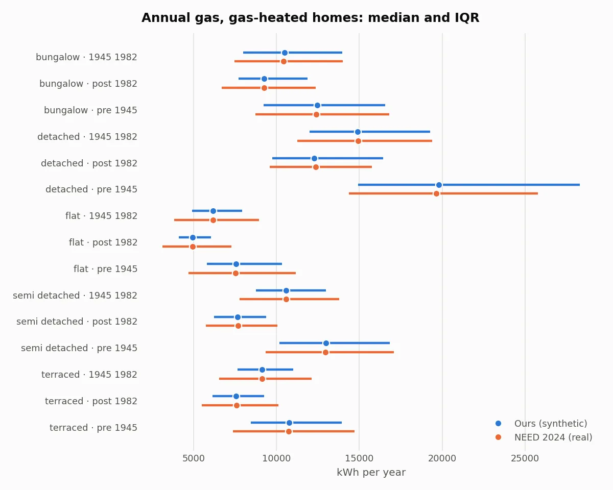
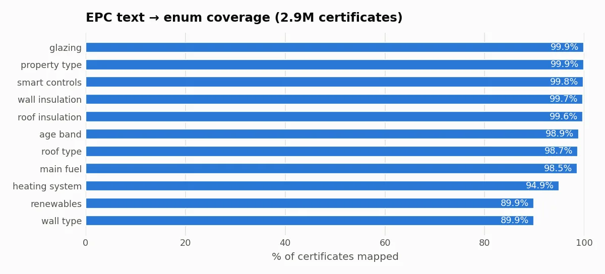

Green Home Score
A UK home gets a 0 to 100 score, a ranked list of retrofits and an estimate of what each would save. The models are trained on 2.9 million real energy certificates, and a language model explains the result without ever producing a number of its own.

The problem
Lloyds asked for a way to tell a homeowner how green their home is and what to do about it. That needs three things a single model can't give honestly: a score people can audit, predictions of what each change would save, and a plain-language explanation.
The team's answer splits those jobs apart. The score is arithmetic with published weights, so it can be checked by hand. The predictions come from models trained on real certificates and sales. The explanation comes from a language model that is handed the computed facts and checked against them before anything reaches the screen.
A score you can check
The Green Home Score is a fixed weighted sum of seven sub-scores: energy efficiency 25%, consumption intensity 20%, insulation 15%, heating 15%, glazing 10%, renewables 10% and smart controls 5%. The problem statement set the weights, so the team didn't tune them. No model and no LLM computes the score.
Consumption intensity is a straight line between the 5th and 95th percentile of the training homes, 85 and 230 kWh per square metre a year. When an owner doesn't know an answer, the engine doesn't guess. It tries every possible value of each unknown field and reports the score as a range.
Runs the same formula as _intensity_sub_score, with the repo's bounds.
def _intensity_sub_score(intensity_kwh_m2: float | None) -> float | None: if intensity_kwh_m2 is None: return None b = get_config().intensity_bounds frac = (b.i_worst - intensity_kwh_m2) / (b.i_worst - b.i_best) return 100 * min(max(frac, 0.0), 1.0)The intensity sub-score: a clipped line between the train-split bounds.
def _ranges( values: dict[str, Any], unknown: set[str]) -> tuple[dict[str, tuple[float, float]], tuple[int, int]]: """Exact enumeration over every value of each unknown score field (and an imputed rating ± spread).""" cfg = get_config() options = { f: [e.value for e in _ENUMS[f]] for f in cfg.engine.validation.score_feature_fields if f in unknown } if "energy_rating" in unknown: bands = [r.value for r in EnergyRating] i, k = bands.index(values["energy_rating"]), cfg.score.score_range["rating_band_spread"] options["energy_rating"] = bands[max(i - k, 0) : i + k + 1] totals: list[int] = [] seen: dict[str, list[float]] = {k: [] for k in _COMPONENT_FIELDS} for combo in itertools.product(*options.values()): subs = _sub_scores(values | dict(zip(options, combo, strict=True))) if None in subs.values(): # e.g. a roof type that needs a roof_insulation we don't have continue totals.append(round_score(sum(_contributions(subs).values()))) for k, v in subs.items(): seen[k].append(v) varied = [k for k, fs in _COMPONENT_FIELDS.items() if set(fs) & options.keys()] return {k: (min(seen[k]), max(seen[k])) for k in varied}, (min(totals), max(totals))Unknown answers become a range by exact enumeration over every value they could take, with the imputed rating allowed to move one band either way.
Four models, one feature builder
| Model | Predicts | Trained on | Files |
|---|---|---|---|
| M4 rating | SAP rating and band | 2.89 million real EPC certificates | 1 |
| M1 energy | Energy after a retrofit package, per fuel | 305,000 simulated home and package outcomes | 2 |
| M2 recommender | Whether an assessor would suggest each of 7 retrofits | 9.4 million real assessor labels | 7 |
| M3 value | Sale price range | 618,000 real Land Registry sales, 20-member ensemble | 20 |
- Monotone constraints keep the models physically sensible: better insulation can never lower the predicted rating, and no retrofit can raise predicted gas use.
- Altogether 30 files, 18,255 trees and about 61 MB, loaded once at start-up.
- The data pipeline streams the 98 GB national certificate archive one file at a time.
An LLM that can't invent numbers
The language model only ever sees a fact sheet: numbers already computed by the engine, formatted exactly as the screens show them. Its reply goes through a checker that pulls out every number and matches it against the fact sheet, including whether a change goes up or down.
If the check fails, the model gets one retry. If that fails too, or the model is unavailable, the page shows a template answer instead. Each answer has a 25 second budget, and the model is never on the critical path.
| Measure | Result |
|---|---|
| Numbers grounded in facts, first draft | 70.5% |
| Numbers grounded in facts, answer shown | 100% |
| Intent and scenario accuracy | 100% |
| Median and p95 latency | 1.83 s, 3.63 s |
def check(text: str, sheet: FactSheet, *, extra_allowed: list[Fact] | None = None) -> CheckReport: # ... allowed = _allowed(sheet, list(extra_allowed or [])) found: list[str] = [] unsupported: list[str] = [] for m in extract_numbers(text): found.append(m.raw) hits = _matches(m, allowed) or (_hedged(m, text) and _matches(m, allowed, approx=True)) if not hits: if not _structural(m, text): unsupported.append(m.raw) continue if all(h.direction == "up" for h in hits) and not _direction_ok(text, m.span): unsupported.append(f"{m.raw} (direction)") elif all(h.direction == "down" for h in hits) and not _direction_ok(text, m.span, "down"): unsupported.append(f"{m.raw} (saving)") for rx in _NEVER_CLAIMS: unsupported += [f"{mt.group(0).strip()} (no such figure)" for mt in rx.finditer(text)] banned = banned_phrases(text) banned += [f"recommending {n}{INFEASIBLE_SUFFIX}" for n in recommended_infeasible(text, sheet)] return CheckReport( passed=not unsupported and not banned, # ... )Every number in a reply must match a fact, and must move in the same direction.
Results on held-out homes
| Model | Measure | Model | Baseline |
|---|---|---|---|
| M4 rating | Mean absolute error, SAP points | 4.68 | 7.99 |
| M4 rating | Within one band | 98.7% | |
| M1 energy | Mean absolute error of net saving, kWh a year | 249.4 | 415.2 |
| M1 energy | Same, multi-retrofit packages | 286.0 | 645.2 |
| M3 value | Median absolute error of price | 15.7% | 18.5% |
| Retrofit | Model | Popularity |
|---|---|---|
| Loft insulation | 0.843 | 0.561 |
| Cavity wall insulation | 0.736 | 0.586 |
| Solid wall insulation | 0.755 | 0.624 |
| Double glazing | 0.844 | 0.523 |
| Air source heat pump | 0.995 | 0.784 |
| Solar PV | 0.935 | 0.592 |
| Smart thermostat | 0.968 | 0.604 |




Decisions the repo explains
Simulated labels without circularity
Energy savings aren't labelled anywhere, so the team simulated them. The simulator uses hidden household factors like thermostat setpoint and occupancy, so the model can't simply learn the simulator back.
docs/MODELS.md
Each fuel predicts its own target
Normalising both fuels by combined energy leaked errors across them: loft insulation appeared to raise electricity use.
docs/MODELS.md
Value is associational, not causal
The value model never sees fields a retrofit can change. When it did, it learned confounded premiums, like +10% for a package that left the band unchanged. Uplift is shown as indicative.
docs/MODELS.md
Heat pumps need recent certificates
Assessment software only started recommending heat pumps in 2025, so the recommender for them trains on 2025 certificates only.
docs/MODELS.md
Savings that add up exactly
Retrofits are applied as growing prefix packages, so each one's incremental saving sums to the package total. An assertion checks the drift.
greenhome/core/orchestrator.py
Where it falls short
- On ordering retrofits, recommending by popularity still wins: NDCG@3 of 0.874 against the model's 0.859, because assessors list measures in a fixed order. The model's strength is picking which homes need a measure.
- Against real NEED data, the model overstates gas savings from cavity wall insulation: 14.1% against an observed 8.4 to 9.2%.
- The sample covers 11 local authorities, is city-heavy, and covers England and Wales only.
- 23% of repeat-certificate pairs were thrown out as inconsistent before training.
packages = [frozenset(order[: k + 1]) for k in range(len(order))] + [frozenset(candidates)] afters = self.models.energy.predict_after([clean] * len(packages), packages) prev, incremental = baseline, {} for r, after in zip(order, afters[:-1], strict=True): incremental[r] = _saving(prev, after) prev = after saving = _saving(baseline, prev) drift = abs(sum(s.net_kwh for s in incremental.values()) - saving.net_kwh) assert drift <= _TELESCOPE_TOL_KWH, f"incremental savings drift {drift} kWh"Prefix packages make incremental savings telescope to the package total.
Built with
- Models and data
- LightGBM 4.7, scikit-learn, pandas, Polars, PyArrow
- Engine and API
- pydantic, FastAPI, Uvicorn, SQLite
- LLM
- gpt-oss-120b and 20b on Groq, Ollama offline
- Front end
- React 18 with htm, no build step
- Testing
- pytest, Hypothesis property tests, Ruff